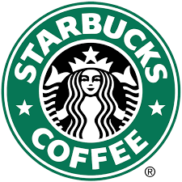

Our Popular Coffee Recipes
Here are some of the most popular Starbucks-inspired drinks you can make at home! Click on each card to learn the recipe.

Iced Caramel Macchiato
Espresso, vanilla syrup, milk, and caramel drizzle!
- 2 shots of espresso
- Vanilla syrup
- Ice and milk
- Caramel drizzle
Pumpkin Spice Latte
Espresso, steamed milk, and a pumpkin spice flavor blend!
- 1 shot of espresso
- Steamed milk
- Pumpkin spice syrup
- Whipped cream
Vanilla Bean Frappuccino
A creamy vanilla drink with ice and milk!
- Vanilla bean ice cream
- Milk
- Ice
- Whipped cream (optional)